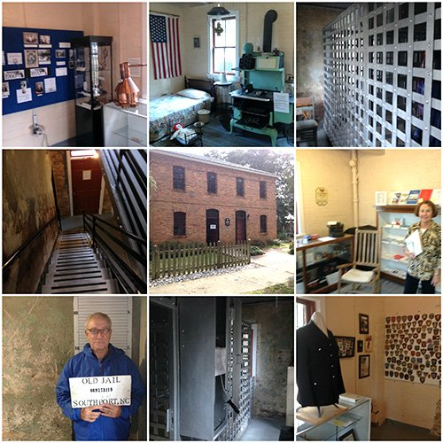

The Old Brunswick County Jail is open to the public!
Located at the corner of Nash and Rhett Streets across from the Old Smithville Burying Ground, the Old Brunswick County Jail was built in 1904 for a low bid of $6,738. Since 1984, the structure has been maintained by the Southport Historical Society and has since undergone extensive renovations to restore this important piece of Southport history.


Step back in time and imagine what it felt
like to be incarcerated in the Old Jail!
Previous jails were wooden structures which were destroyed by a hurricane and by fire. The Old Jail Museum is now a two-story brick building, which was completed in 1904. It consists of the living quarters for the jailor and his family as well as two cells and a runabout on the second floor. Each cell was designed with four bunks, a commode, and a wash basin. Everyone loves to have their picture taken behind bars in the Old Jail.
The most notorious “criminal” to be booked in the facility was movie actress Sissy Spacek in the 1986 film “Crimes of the Heart.” Come in and see where the jail scenes from the movie were filmed.
This is a great family activity when in Southport! A visit to the Old Jail includes a guided tour conducted by knowledgeable docents. Kids will enjoy the museum with special activities designed just for them.
The Museum is currently open Wednesdays and Saturdays from 12:30 pm to 3:30 pm from April through October as well as Fridays 12:30 to 3:30 June through August. We are closed during the winter months so that our docents can celebrate the holidays with their families and to allow time to add new displays and rearrange existing ones. Suggested donation $5 per adult visitor is greatly appreciated and helps us to maintain the building and provide ongoing exhibits.
The museum welcomes school groups, group tours and may be able to host your special occasion. We ask that groups please make a reservation in advance so that we may accommodate your visit. Please contact us at info@southporthistoricalsociety.org.
